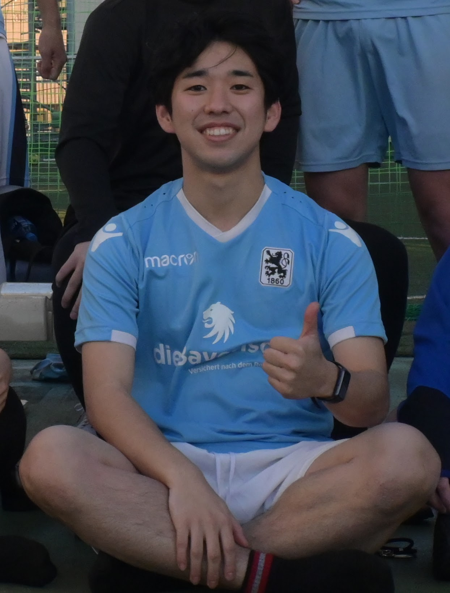

Norikazu.H
経歴
2000年 - 2004年: 東京都世田谷区
2004年 - 2013年: 岡山県岡山市
2013年 - 2020年: 横浜市戸塚区
2020年 - 現在: 福井県吉田郡
学歴
2019年: 神奈川県立 湘南高等学校 卒業
2020年: 福井大学 医学部医学科 入学
発表
2022年: 第50回日本救急医学会総会・学術集会
2023年: 第93回日本感染症学会西日本地方会学術集会
2023年: 第14回日本リケッチア症臨床研究会
2024年: 第51回日本集中治療医学会学術集会 優秀セッション
受賞
2023年: Finalists, European Society of Intensive Care Medicine Datathon
2023年: People's Award (most voted), TMDU 3rd Datathon
ソーシャルメディア